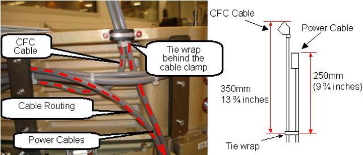

Apply a cable tie 250 mm (9 ¾ in.) away from the Power cable connector end and 350 mm (13 ¾ in.) away from the CFC cable connector end as measured to the tie wrap.
Position the cable tie (Ty-wrap) behind the clamp as shown in Illustration 8.
Torque the cable clamp screws to the values shown in the Table below.
Table 2: Cable Clamp Screw Torque
| 2.3 N-m | 20.4 lb-in | 1.7 lb-ft | 23.4 kg-cm |
Illustration 8: Fan Controller (CFC) cabling
